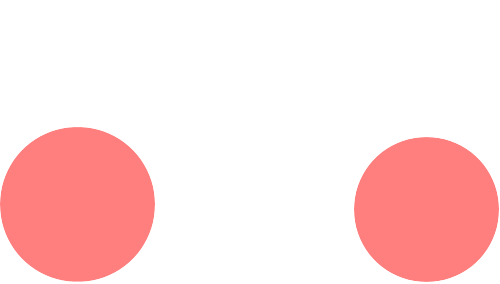
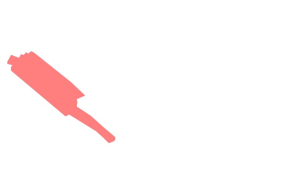
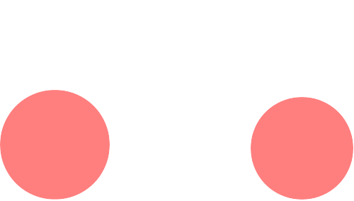
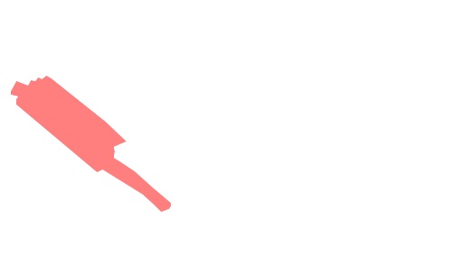

VTR L.I.R : La VTR SP1 & SP2 de chez Honda est devenue véritable collector. Les versions compétitions ont largement démontrées de quoi était capable la VTR.
CARENAGE : On peut changer l'habillage d'origine par un adaptable plus léger et moins cher en cas de casse. Il existe beaucoup de fournisseurs. Les matériaux employés font varier le prix, le poids et la résistance. L'ensemble le moins cher est constitué de fibre de verre et de résine polyester. Il n'est pas très léger, peu résistant à l'abrasion mais se répare facilement. Attention, certains sont simplement recouverts d'une peau carbone et sont vendus beaucoup plus chers. A part le look, leurs caractéristiques sont similaires. Le top, c'est un mixte de fibres carbone et kevlar (pour la légèreté et la résistance à l'abrasion) avec une résine époxy (beaucoup plus légère). Les précautions à prendre sont simples. Il vaut mieux conserver les pattes de fixation d'origine. Elles sont maintenant relativement légères et prévues ( forme et matériau) pour résister aux vibrations. Si vous les changez, conservez ces caractéristiques. La visserie doit concilier rapidité d'accès et résistance au démontage. Utilisez des silents-blocs et des rondelles plastiques.
JANTE : De même que pour la transmission, le gain est plus important par la diminution de masse non-suspendue que par le gain de poids dans l'absolu. Il existe aussi beaucoup de fournisseurs de roues. Un certain nombre de séries de roues magnésium ont été livrées avec des défauts (des criques) par le passé, il vaut donc mieux s'assurer de la qualité du fournisseur en demandant plusieurs avis. Les roues magnésium ont une durée de vie de 2 ans en moyenne, au-delà, le métal vieillissant, cela devient risqué. Des porosités et des fissures peuvent en effet apparaître . Il ne faut pas enlever la peinture d'origine (éventuellement la recouvrir) car elle est étudiée pour protéger le magnésium. Pour l'arrière, il faut aussi examiner la qualité du support de transmission. Il varie en général de l'origine et il faut donc changer les couronnes. Pour l'avant, vérifiez l'entraxe de fixation de disque, le nombre et l'écartement des filetages.
ECHAPPEMENT : Il est très rare de trouver des silencieux à absorption plus performants que l'origine. Hélas, ceux-ci sont en général très lourds. Veillez donc à choisir un silencieux testé dans un comparatif pour associer votre gain de poids à une conservation des performances. Tous les règlements ne le permettent pas, mais un changement de l'échappement complet permet de gagner beaucoup de poids. Là encore, il ne faut pas choisir un modèle beaucoup plus important en diamètre de tube sans l'adapter à l'admission et aux diagrammes d'arbre à cames.